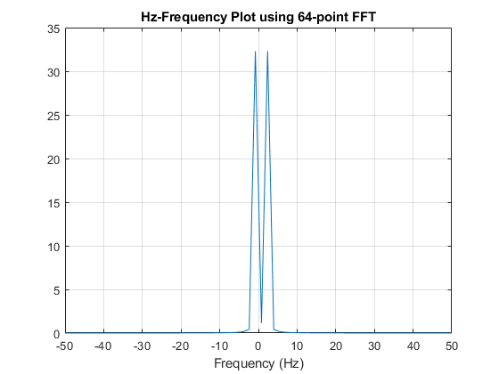
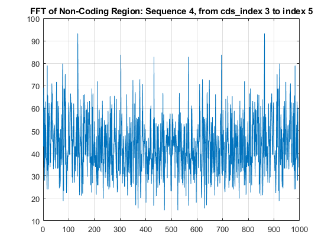

Contents
- Lab 3.1.1 =====================================================
- Lab 3.1.2 =====================================================
- (2)
- (3)
- (4)
- (6)
- (8)
- Lab 3.2.1 =====================================================
- (1)
- (2)
- (3)
- 3.2.3 =========================================================
- 3.3.1 =========================================================
%{ Yonatan Carver ECES 352 - Lab 3 %} clear; clc; close all
Lab 3.1.1 =====================================================
%{ 1) 31 results for "hbb" 3) 280 results for "hbb AND human[orgn]" %}
Lab 3.1.2 =====================================================
(1)
w = 10; % 10Hz Fs = 100; % 100Hz tt = 0 : 1/Fs : 1; % time axis x = cos(w * tt); % plot(tt, x); % grid on % xlabel('time (s)') % title('One second of cos(10Hz * tt) sampled at F_s = 100Hz')
(2)
N = 64;
fft_x = abs(fftshift(fft(x, N))); % N-point FFT
(3)
range = 0 : 1 : 63;
range = linspace(0, 63, N); figure plot(range, fft_x) grid on xlabel('Frequency (Hz)') title(['Hz-Frequency Plot using ', num2str(N), '-point FFT']) % [yy, xx] = findpeaks(fft_x); % frequency spikes @ f = 26 & 38
(4)
range = linspace(-50, 50, N); % plot from -50 to 50 (100Hz sampling rate) figure plot(range, fft_x) grid on xlabel('Frequency (Hz)') title(['Hz-Frequency Plot using ', num2str(N), '-point FFT']) % frequency spikes @ -8.7302 & 10.3175
(6)
range = linspace(-pi, pi, N); figure plot(range, fft_x) grid on xlabel('Frequency (Hz)') title(['Hz-Frequency Plot using ', num2str(N), '-point FFT']) % frequency spikes @ -0.5484 & 0.6483
(8)
fft_x = abs(fftshift(fft(x, 1024))); % 1024-point fft range = linspace(-pi, pi, 1024); figure plot(range, fft_x) grid on xlabel('Frequency (Hz)') title(['Hz-Frequency Plot using ', num2str(N), '-point FFT']) [yy, xx] = findpeaks(fft_x); % frequency spikes @ -0.6295 & 0.6357
Lab 3.2.1 =====================================================
clear; clc; close all hbb = genbankread('hbb_region_chr11.gb'); % load *.gb file as a struct cds_indices = hbb.CDS.indices; % get range of indices of CDS
(1)
There are 5 CDS regions in the sequence length(hbb.CDS)
(2)
The length of hbb.CDS(1).translation is 147 length(hbb.CDS(1).translation)
(3)
% use function "get_sequence_ft" % function sequence_FT = get_sequence_ft(hbb, sequence_number) N = 1024; sequence1_ft = get_sequence_ft(hbb, 1, N); sequence2_ft = get_sequence_ft(hbb, 2, N); sequence3_ft = get_sequence_ft(hbb, 3, N); figure plot(sequence1_ft) title('FFT of Coding Region: Sequence 1, from cds\_index 1 to index 2') grid on figure plot(sequence2_ft) title('FFT of Coding Region: Sequence 2, from cds\_index 3 to index 4') grid on figure plot(sequence3_ft) title('FFT of Coding Region: Sequence 3, from cds\_index 5 to index 6') grid on [y1, x1] = findpeaks(sequence1_ft); [y2, x2] = findpeaks(sequence2_ft); [y3, x3] = findpeaks(sequence3_ft); %{ signal: sequence1 a = sort(y1); b = sort(y2); c = sort(y3); x1(find(y1 == a([end]))) 232.4562 frequency peaks @ 308 & 690 =============================== x2(find(y2 == b([end]))) 251.8894 frequency peaks @ 292 & 706 x2(find(y2 == b([end-2]))) 224.3544 frequency peaks @ 92 & 906 x2(find(y2 == b([end-4]))) 209.4380 frequency peaks @ 329 & 669 =============================== x3(find(y3 == c([end]))) 165.9027 frequency peaks @ 328 & 670 x3(find(y3 == c([end-2]))) 142.8912 frequency peaks @ 164 & 834 x3(find(y3 == c([end-4]))) 126.3875 frequency peaks @ 230 & 768 %}

3.2.3 =========================================================
N = 1024;
sequence1a_ft = get_sequence_ft(hbb, '1a', N); sequence2a_ft = get_sequence_ft(hbb, '2a', N); figure plot(sequence1a_ft) title('FFT of Non-Coding Region: Sequence 1, from cds\_index 2 to index 3') grid on figure plot(sequence2a_ft) title('FFT of Non-Coding Region: Sequence 4, from cds\_index 3 to index 5') grid on
3.3.1 =========================================================
DNA_SEQUENCE = hbb.Sequence; WINDOW_LENGTH = 10; NFFT = 1024; % DNA_SEQUENCE = hbb.Sequence; % WINDOW_LENGTH = 1000; % NFFT = 1024; output = threebasefreq_stft(DNA_SEQUENCE, WINDOW_LENGTH, NFFT); plot(output)